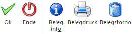

In der WinLine FAKT gibt es den Menüpunkt…
1 Erfassen
1 Belegerfassung
1 Rechnungsstorno
In diesem Menüpunkt werden alle Beleg bzw. alle erfassten Barbelege angezeigt und können anschließend mittels Ribbon-Buttons oder der rechten Maustaste angezeigt, gedruckt oder storniert werden.

In diesem Fenster gibt es folgende Selektionsmöglichkeiten:
Ø Nur meine Rechnungen
Bei aktivierter Option werden nur die Belege angezeigt, welche vom gerade angemeldeten Benutzer erfasst wurden. Diese Option ist Standardmäßig beim Aufruf des Menüpunkts aktiviert.
Ø Barrechnungen
Mit dieser Option werden alle Rechnungen angezeigt, welche mit einer Barbelegart geschrieben wurden.
Ø Nur Kassenbelege
Mit dieser Option kann eingestellt werden, ob der Benutzer nur Belege sehen möchte, welche mit einer Barbelegart erfasst wurde. Diese Option ist Standardmäßig beim Aufruf des Menüpunkts aktiviert.
Ø Rechnungsnummer
Hier kann eine Rechnungsnummer eingegeben werden um nach dieser explizit zu suchen. Hier steht ein Matchcode zur Verfügung.
Ø Konto
Es kann nach einem bestimmten Konto eingegrenzt werden. Über die Matchcodefunktion kann nach allen angelegten Konten gesucht werden.
Zeitraum
Im Bereich Zeitraum können folgende Selektionen vorgenommen werden:
Ø Selektion
Aus der Auswahllistbox kann ein Zeitraum gewählt werden. Beim Aufruf des Fensters wird die Option "Heute" vorgeschlagen. Abhängig von der ausgewählten Selektion werden die Felder…
Ø Datum von / bis
… vorbesetzt, können aber indiv. abgeändert werden. Über die Matchcodefunktion kann über einen Kalender auch ein beliebiges Datum ausgewählt werden.
Dieses Fenster ist zusätzlich in zwei Tabellen unterteilt. Die obere Tabelle zeigt die Belege lt. den Selektionen an und in der unteren Tabelle sind die jeweils erfassten Artikel des oben selektieren Belegs ersichtlich.
Buttons

Ø Ok
Durch Anklicken des OK-Buttons werden die Belege gemäß der aktuellen Einstellungen aktualisiert.
Ø Ende
Durch Drücken der ESC-Taste wird das Fenster geschlossen.
Ø Beleginfo
Durch Anklicken des Beleginfo-Buttons wird der ausgedruckte Beleg nochmals so angezeigt, wie er ursprünglich erstellt wurde.
Ø Belegdruck
Mit dem Button Belegdruck kann der Beleg nochmals als Kopie ausgedruckt werden.
Ø Belegstorno
Durch Anklicken des Buttons Belegstorno kann der aktive Beleg storniert werden, wobei als zusätzliche Information noch ein "Grund für Storno" eingegeben werden kann. Mit Bestätigung des Storno-Fensters wird der komplette Beleg storniert und auch ausgedruckt (so, wie der ursprüngliche Beleg erstellt wurde). Zusätzlich wird auch ein Eintrag ins Datenerfassungsprotokoll (DEP) durchgeführt.